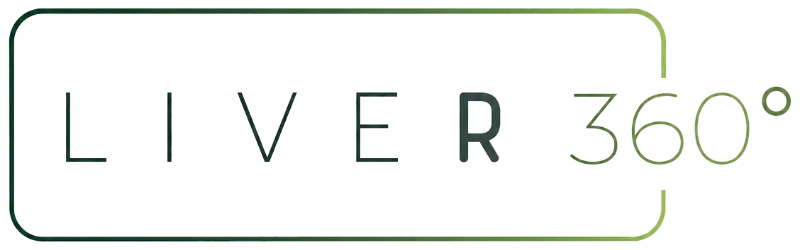
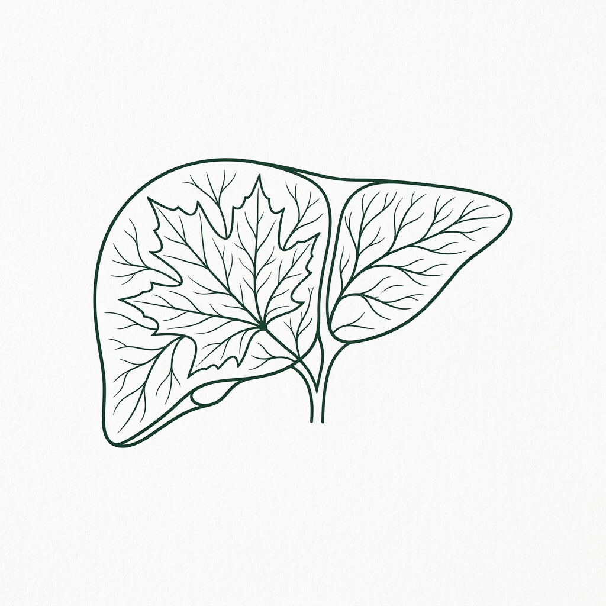

O Liver 360° é um programa intensivo de 6 meses criado para pessoas que receberam diagnóstico de esteatose hepática e decidiram agir com método — não com tentativas.
QUERO SABER MAIS
Recebeu o diagnóstico de esteatose hepática e não sabe exatamente o que fazer.
Seus exames continuam alterados mesmo depois de "tentar" mudar a alimentação.
Já fez dieta, parou, começou de novo — e o resultado não sustentou.
Tem medo de que isso evolua para algo mais grave.
Quer acompanhamento estruturado, não orientações soltas.
Sente-se cansado, sem energia e desmotivado para manter uma rotina saudável.
Ela é um marcador metabólico silencioso. Pode evoluir para inflamação, fibrose e, nos casos mais avançados, cirrose hepática. O problema não é a falta de informação. O problema é a falta de método.
Consultas isoladas não controlam esteatose. Dieta sem acompanhamento não sustenta mudança. Motivação sem estrutura não dura 6 semanas.
O que funciona é acompanhamento multidisciplinar, estruturado, com metas claras e monitoramento real.
Um programa intensivo de 6 meses desenvolvido pelo Liver Instituto do Fígado de Goiás, com acompanhamento completo de uma equipe multidisciplinar especializada.
Drª Patrícia Borges
Especializada em metabolismo
Direcionamento personalizado
Com Endocrinologista e Cardiologista
É um método estruturado com plano individual, metas definidas, exames incluídos e monitoramento real ao longo de cada fase.
Para garantir acompanhamento individualizado.
Você deixa de improvisar e passa a seguir um método.
Mudança não é motivação. É consistência orientada.
Você não termina dependente. Você termina preparado.
Você acompanha sua evolução com dados reais, não por sensação.
Composição corporal com precisão clínica
3 avaliações inclusasMapeamento do grau de fibrose do fígado
2 avaliações inclusasAvaliação morfológica completa
2 avaliações inclusasPossui diagnóstico confirmado ou suspeita de esteatose hepática
Tem exames alterados e quer controle real
Apresenta resistência insulínica, sobrepeso ou síndrome metabólica
Já tentou mudar sozinho e não conseguiu manter
Quer acompanhamento médico estruturado — não dicas da internet
Está disposto a assumir um compromisso de 6 meses com sua saúde
Este programa não é para quem busca solução rápida. É para quem decidiu agir com seriedade.
O Liver 360° não tem inscrição aberta ao público. O processo é seletivo para garantir que cada participante esteja preparado para o comprometimento que o programa exige.
Nossa equipe vai entrar em contato para entender seu histórico e perfil clínico.
Você responde perguntas simples para avaliarmos se o programa é adequado para o seu momento.
Se aprovado, você recebe os detalhes e inicia o programa na próxima turma.
O programa combina consultas presenciais na clínica com retornos que podem ser realizados de forma online, conforme orientação da equipe.
Ter um diagnóstico estabelecido ou suspeita clínica de esteatose hepática é necessário. Durante a triagem, nossa equipe avaliará seu perfil.
Os retornos têm flexibilidade de formato (presencial ou online). Fale com nossa equipe para entender as condições de cada etapa.
Sim — mas apenas após a triagem inicial, quando nossa equipe entende seu perfil e confirma que o programa é adequado para você. Esse é o nosso processo padrão.
Entre em contato pelo WhatsApp e nossa equipe avaliará as condições de participação conforme sua localização.
E em algum momento, cada pessoa precisa decidir se vai continuar adiando ou se vai assumir o controle. O Liver 360° não é para quem quer tentar. É para quem decidiu.
As vagas da turma atual são limitadas. Nossa equipe está pronta para te receber.
QUERO FALAR COM A EQUIPE